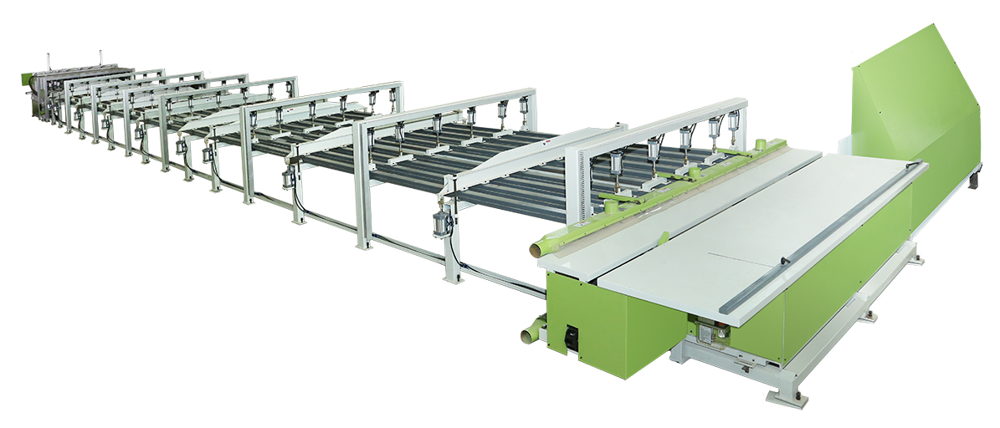
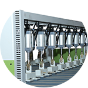
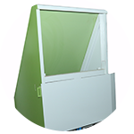
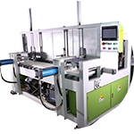
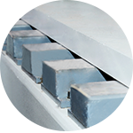

全自动实木拼板生产线
SPM-PJL2505
设备质量稳定可靠：本公司生产产品均为自主研发，采用同类设备中最高规格材料和标准生产，最大程度确保设备实用性和可靠性。生产效率高：本设备能自动化完 成拼板裁料一系列工作，极大地提高生产效率。节省成本：本公司设备能有效解决传统拼板设备需要人手多，工人劳动强度大的问题，能最大程度节省人工成本。同时本公司设备生产精度高，产品扎实可靠，有效把客户后续使用的维护成本降到最低。


采用同类设备中数量 最多最厚实的用料

采用同类设备中数量 最多最厚实的用料

一体化的设计极大增强 设备强度且细致化的设 计使设备更美观

多达七道加工工序 使工作平台更光滑
设备参数 Device parameter
型号：SPM-PJL2505
名称：全自动实木拼板生产线
总功率：27.05kw
设备总重量：14000kg
加工长度：1800-2500mm
加工宽度：900-1300mm
加工厚度：8-30mm
设备尺寸：长 28m 宽5.5m 高1.8m